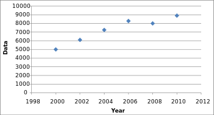

Common tricks to manipulate data:
- Truncated Y-axis
- Omitting Data
- Fake Cumulative graph
- Non-Correlating Causation
Type 1: Truncated Y-axis
Not setting the origin of the y-axis at zero, small differences become hyperbolic.

The interest rates are skyrocketing! And the bar sizes imply that rates in 2012 are several times higher than those in 2008.
But something seems wrong...
The y-axis is not start at 0.00%, so the difference is significant. What if the y-axis starts at 0.00% ?

The interest rates are staying static now.
Type 2: Omitting Data
By omitting certain data points, trends that don’t actually exist can easily be created whereas some existing highlights can go unnoticed.

This graph is accurate and includes data from each year.
When half of the data points are removed, it looks like a steady march upward.
By only plotting every second year instead of every year, the graph appears to have a steady increase, while the real data is more volatile.
Type 3: Fake Cumulative graph
By creating cumulative graph, the data keep increasing, while in fact there is a decrease.

The cumulative annual revenue ismoving up and to the right, so things must be going well!
When we draw a non-cumulative graph, the result is totally different...
Revenues have been declining for the past ten years!
Type 4: Non-Correlating Causation
Correlation doesn’t imply causation, but sometimes people care more about correlation rather than causation.

Does ice-cream consumption leads to murder? NO!
We are beginning to see correlating causation more and more with big data analyses.
Data scientists are finding statistical patterns in data and sometimes care more about correlation rather than causation.
Reference:
Data Visualizations Designed to Mislead by Agata Kwapien
How to Lie With Data Visualization by Ravi Parikh
Don’t Let Your Trial Graphics Go Beyond Advocacy to Misleading by Morgan Smith